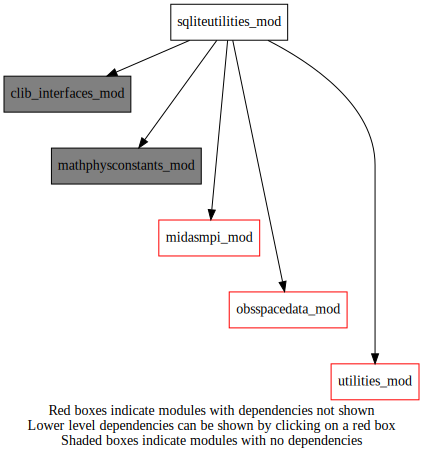
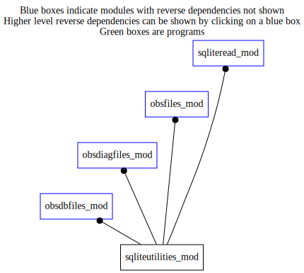

Dependency Diagrams:
 Direct Dependency Diagram¶
 Reverse Dependency Diagram¶
Description
MODULE sqliteUtilities (prefix=’sqlu’ category=’3. Observation input/output’)
- Purpose
A place to collect utilities for SQLite files.
Quick access
- Routines
sqlu_getcolumnvalueschar(),sqlu_getcolumnvaluesdatestr(),sqlu_getcolumnvaluesnum(),sqlu_getinitialidobsdata(),sqlu_getsqlcolumnnames(),sqlu_handleerror(),sqlu_query(),sqlu_sqlcolumnexists(),sqlu_sqltableexists()Needed modules
fsqlite
clib_interfaces_mod: MODULE clib_interfaces_mod (prefix=’’ category=’9. Global interfaces’)
obsspacedata_mod: MODULE obsSpaceData_mod (prefix=’obs’ category=’6. High-level data objects’)
midasmpi_mod: MODULE midasMpi_mod (prefix=’mmpi’ category=’8. Low-level utilities and constants’)
utilities_mod: MODULE utilities_mod (prefix=’utl’ category=’8. Low-level utilities and constants’)
mathphysconstants_mod: MODULE MathPhysConstants_mod (prefix=’mpc’ category=’8. Low-level utilities and constants’)Variables
Subroutines and functions
- function sqliteutilities_mod/sqlu_sqlcolumnexists(filename, tablename, columnname)¶
- Purpose
Check if a column exists in the sqlite file/table
- Arguments
filename [character ,in]
tablename [character ,in]
columnname [character ,in]
- Return
columnexists [logical ]
- Called from
odbf_readmidasbodytable(),odbf_addcolumnsmidastable(),sqlr_updatesqlite()- Call to
- function sqliteutilities_mod/sqlu_sqltableexists(filename, tablename)¶
- Purpose
Check if a table exists in the sqlite file
- Arguments
filename [character ,in]
tablename [character ,in]
- Return
tableexists [logical ]
- Called from
odbf_readmidasbodytable(),odbf_updatemidasheadertable(),odbf_updatemidasbodytable(),obsf_determinesplitfiletype(),sqlr_readsqlite_avhrr()- Call to
- subroutine sqliteutilities_mod/sqlu_getsqlcolumnnames(sqlcolumnnames, filename, tablename, datatype)¶
- Purpose
Read the column names in the sqlite file for the specified table.
- Arguments
sqlcolumnnames (*) [character ,out,allocatable]
filename [character ,in]
tablename [character ,in]
datatype [character ,in]
- Called from
- Call to
- subroutine sqliteutilities_mod/sqlu_getcolumnvaluesnum(columnvalues, filename, tablename, sqlcolumnnames[, extraquery_opt])¶
- Purpose
Read the column values from sqlite file for the specified table and column names.
- Arguments
columnvalues (*,*) [real ,out,allocatable]
filename [character ,in]
tablename [character ,in]
sqlcolumnnames (*) [character ,in]
- Options
extraquery_opt [character ,in,]
- Called from
- Call to
- subroutine sqliteutilities_mod/sqlu_getcolumnvalueschar(columnvalues, filename, tablename, sqlcolumnnames)¶
- Purpose
Read the column values from sqlite file for the specified table and column names.
- Arguments
columnvalues (*,*) [character ,out,allocatable]
filename [character ,in]
tablename [character ,in]
sqlcolumnnames (*) [character ,in]
- Called from
- Call to
- subroutine sqliteutilities_mod/sqlu_getcolumnvaluesdatestr(columndatevalues, columntimevalues, filename, tablename, sqlcolumnname)¶
- Purpose
Read the column values from sqlite file for the specified table and column names.
- Arguments
columndatevalues (*) [integer ,out,allocatable]
columntimevalues (*) [integer ,out,allocatable]
filename [character ,in]
tablename [character ,in]
sqlcolumnname [character ,in]
- Called from
- Call to
- subroutine sqliteutilities_mod/sqlu_getinitialidobsdata(obsdat, obsfamily, idobs, iddata[, codetypelist_opt])¶
- Purpose
Compute initial value for idObs and idData that will ensure unique values over all mpi tasks
- Arguments
obsdat [struct_obs ]
obsfamily [character ]
idobs [integer ]
iddata [integer ]
- Options
codetypelist_opt (*) [integer ]
- Called from
diaf_writesqldiagfile(),sqlr_writepseudosstobs(),sqlr_writeemptypseudosstobsfile()- Call to
- function sqliteutilities_mod/sqlu_query(db, query)¶
- Purpose
To create a query to read an SQLite file
- Arguments
db [fsql_database ] :: type handle for SQLIte file
query [character ]
- Return
sqlu_query [character ]
- Called from
- Call to
- subroutine sqliteutilities_mod/sqlu_handleerror(stat, message)¶
- Arguments
stat [fsql_status ]
message [character ]
- Called from
diaf_writesqldiagfile(),sqlu_query(),sqlr_readsqlite(),sqlr_updatesqlite(),sqlr_addcloudparametersandemissivity(),sqlr_insertsqlite(),sqlr_cleansqlite(),sqlr_writepseudosstobs(),sqlr_writeemptypseudosstobsfile()- Call to
{kind=link}
{kind=link}